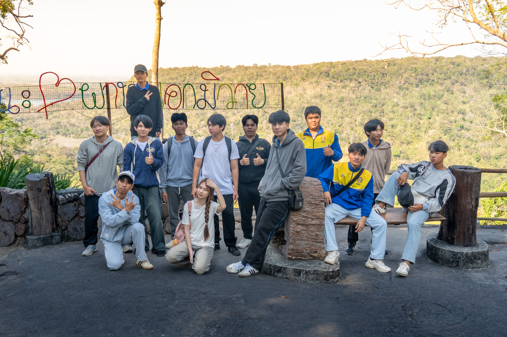
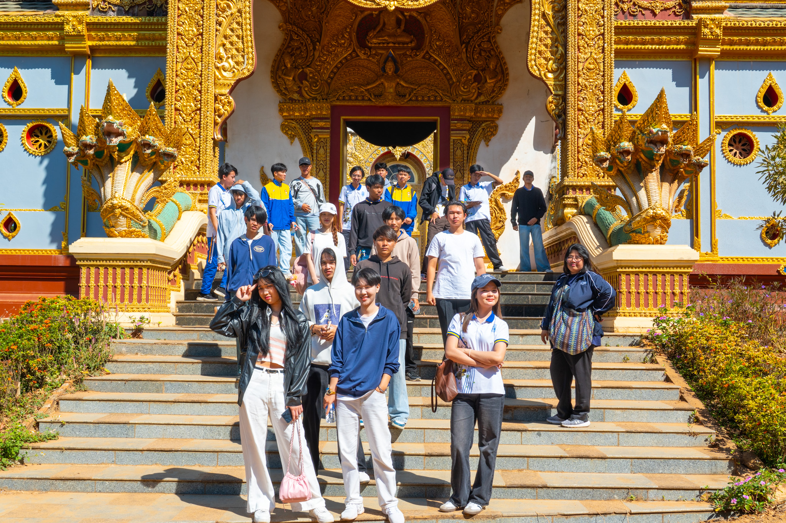
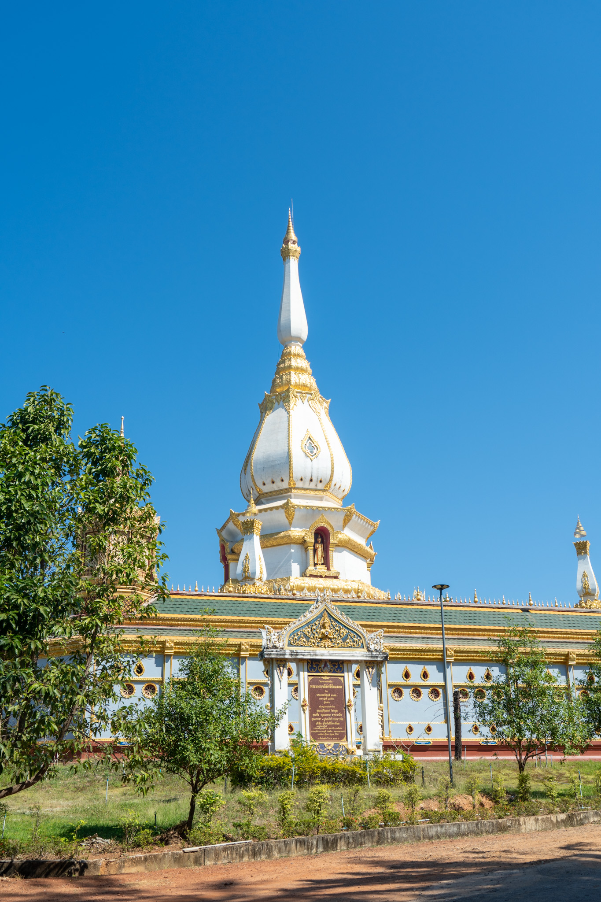
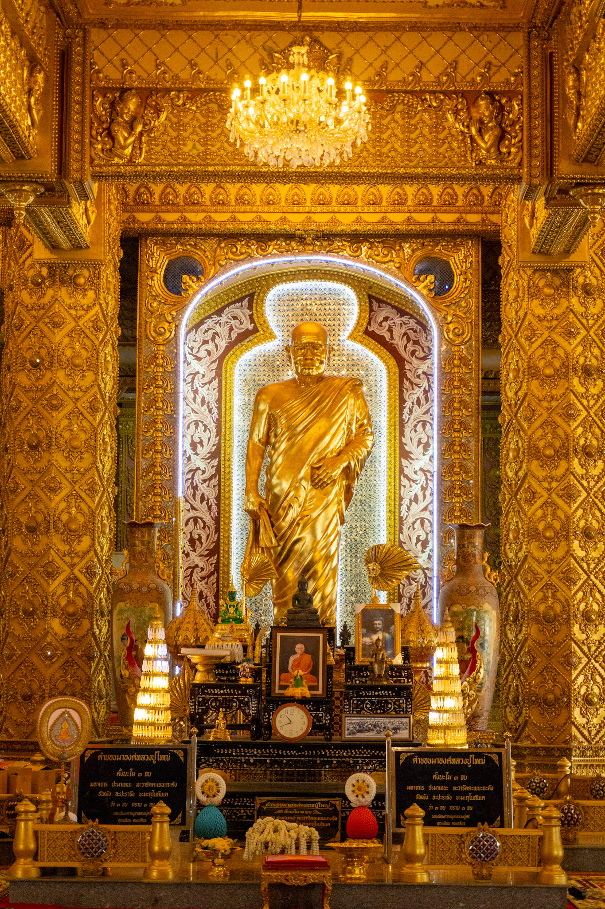

ผาหมอกมิวาย (เขตห้ามล่าสัตว์ป่าถ้ำผาน้ำทิพย์) อ.หนองพอก จ.ร้อยเอ็ด คือจุดชมวิวทะเลหมอกและพระอาทิตย์ตกที่สวยงามเงียบสงบ บรรยากาศเย็นสบายตลอดปี เหมาะสำหรับกางเต็นท์นอนดูดาวและเดินศึกษาธรรมชาติ (เส้นทาง 2-3 กม.) ไฮไลท์คือวิวทุ่งนาและภูเขาเตี้ยสลับซับซ้อนสุดสายตา

มหาเจดีย์ชัยมงคล เป็นพระมหาเจดีย์ขนาดใหญ่และงดงาม ตั้งอยู่ที่วัดผาน้ำทิพย์เทพประสิทธิ์วนาราม จังหวัดร้อยเอ็ด บนเนินเขาสูง มองเห็นทิวทัศน์รอบด้านได้อย่างสวยงาม จุดเด่น 1สถาปัตยกรรมผสมผสานศิลปะไทยภาคกลางและภาคอีสาน 2ภายนอกตกแต่งด้วยหินอ่อนสีขาวและยอดสีทองอร่าม 3 ภายในประดิษฐานพระพุทธรูปสำคัญและพระบรมสารีริกธาตุ

